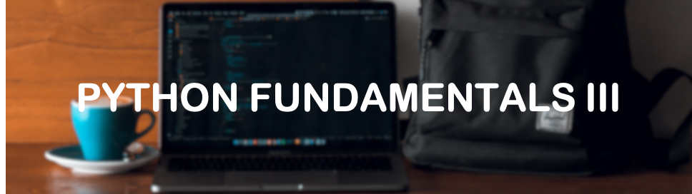

Week 3: Fundamentals Part III
This week is all about turtles 🐢!
For the project that we going to create over the next three weeks, we will be implementing the turtle module. One of the most important skills to learn when programming is how to look up what you want to do; the internet is full of really great resources, especially for Python. This week I would like you to work through this article provided by realpython.com. Getting to grips with the ideas in this article will allow you to understand what is going on when we build our pong game in weeks 4 to 6.
Guide to Python TurtleTo test your understanding we have also compiled some quiz questions about the article and you can find a link to the questions below. You can find the solutions to the coding challenge for week 2 here.
Week 3 QuizLive Zoom Session
The recording from the live zoom session on Wednesday 24th March 2021 can be found below.